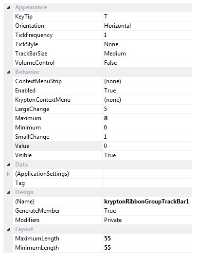

Ribbon Group Item TrackBar
Group Item TrackBar
Use this element to add a track bar control to the ribbon. The set of available properties is shown in Figure 1.

Figure 1 - Group Item TrackBar Properties
KeyTip
When KeyTips are displayed this property defines the KeyTip for the custom control instance. You should ensure that all items inside a tab have unique KeyTip values so that the user can always select items using keyboard access.
Orientation
Change the direction of the track bar by switching this property from the default of Horizontal to Vertical.
TickFrequency
A tick mark is drawn depending on the frequency value defined. A frequency value of 1 draws a tick mark for each value between the Minimum and Maximum, a frequency of 5 would only draw a tick mark for every 5th value between those value limits.
TickStyle
You can prevent any ticks marks being drawn by setting this value to None. Use the other options allows ticks to be shown either to one side of the track or to both.
TrackBarSize
The track bar can be shown in either Small, Medium or Large variations. Choose the variation that gives the appearance required for your application.
VolumeControl
Setting this to true will turn the control into drawing as a volume control with the track looking like a wedge.
ContextMenuStrip
Assign a standard windows ContextMenuStrip instance to this property for display on right clicking the control.
Enabled
Used to define if the track bar is enabled or disabled at runtime.
KryptonContextMenu
Assign a KryptonContextMenu instance to this property for display on right clicking the control.
LargeChange
This value is added or subtracted from the Value when the user clicks to the side of the position indicator.
Maximum
Defines the maximum allows value of the Value property.
Minimum
Defines the minimum allows value of the Value property.
SmallChange
Use this property to specify if the text box should be visible at runtime.
Value
Specifies the current Value of the KryptonTrackBar.
Visible
Use this property to specify if the text box should be visible at runtime.
Tag
Associate application specific information with the object instance by using this property.
MinimumLength
The minimum pixel length of the control. When the Orientation is Horizontal the length is the Width otherwise the Height of the control.
MaximumLength
The maximum pixel length of the control. When the Orientation is Horizontal the length is the Width otherwise the Height of the control.